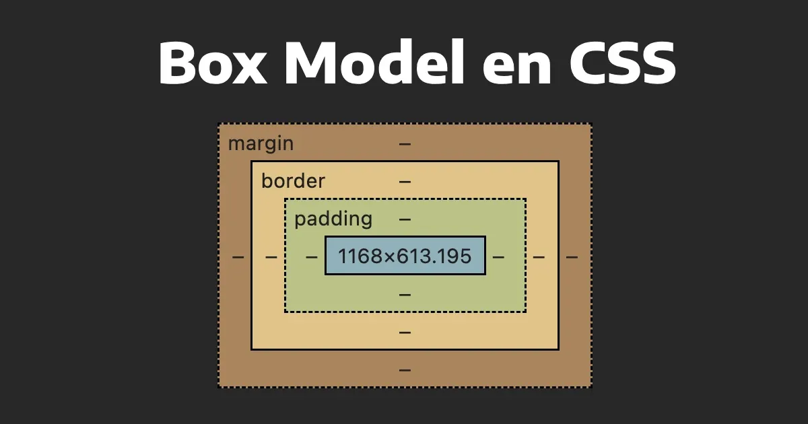

Introducción
En este portfolio se encuentran las actividades realizadas a lo largo de la primera parte de la cursada, cada una de ellas con su respectiva descripción y una imágen ilustrativa. Cada imágen permite navegar directamente al ejercicio correspondiente.

Acerca de mí
Me llamo Ignacio Zarlenga y soy un estudiante de Ingeniería Informática, actualmente cursando el último cuatrimestre de la carrera. Me idenfitico como un apasionado por el aprendizaje continuo.
Saber más!Actividad 1
Este ejercicio se basó en la introduccion a HTML, donde vimos las primeras armas para armar la primera pagina web, formateo de texto, listas de elementos, inserción de imagenes y enlaces a páginas web externas.
Actividad 2
Este ejercicio se basó en la estructura semántica de HTML, donde vimos cómo organizar páginas web utilizando encabezados, navegación, secciones, articulos y piés de paginas entre otros.
Actividad 3
Este ejercicio se basó en la introducción a CSS, donde tuvimos un ejercicio para simular el diseño de un archivo Word dentro de un navegador.

Actividad 4
Este ejercicio nos enseñó a utilizar las propiedades de cajas en css, reconstruyendo varias imagenes utilizando únicamente etiquetas HTML y propiedades de CSS. (Aclaración, en mi caso además había hecho uso de propiedades de FlexBox)

Actividad 5
Este ejercicio se basó en el uso de propiedades Flexbox para reparar diseños de páginas ya provistas que necesitaban reordenar el contenido